角色換皮：換骨架、換 Mesh
把第三人稱範本的主角，換成手上的舊版（UE4）角色，並套上 AnimStarterPack 動作包的動作。只要兩個步驟：先幫角色換骨架，再把主角的 Mesh 換掉。本手冊以 Infinity Blade Warriors 裡的 SK_CharM_Forge 示範。
0開始之前
你需要一個 UE 5.8 第三人稱範本的專案，並且已經加入下面兩個素材包：
| 素材包 | 用途 | 在 Content 裡的資料夾 |
|---|---|---|
| AnimStarterPack | 提供動作（走、跑、跳、持槍）和動畫藍圖 | AnimStarterPack |
| Infinity Blade: Warriors | 提供角色外觀（Skin） | InfinityBladeWarriors/Character/CompleteCharacters |
先懂一個觀念：動作要跟著「骨架」走
一個會動的角色由三樣東西組成。動作是記錄「每根骨頭怎麼轉」，所以角色和動作必須用同一份骨架，動作才套得上去。
（例：SK_CharM_Forge）
newUE4_Mannequin_Skeleton
（AnimStarterPack）
Forge 原本綁的是另一份骨架（UE4_Mannequin_Skeleton，放在別的素材包裡），所以 AnimStarterPack 的動作套不上去。第 1 步就是把它改綁到 AnimStarterPack 的骨架 newUE4_Mannequin_Skeleton。
1換骨架：Assign Skeleton
把 Forge 改綁到 AnimStarterPack 的骨架。
1-1在內容瀏覽器找到角色
- 在 Content Browser 打開
Content › InfinityBladeWarriors › Character › CompleteCharacters。1 - 縮圖沒有顯示名字，不好找：在搜尋框輸入
Forge篩選。2 - 點選底線是粉紅色的那一個（粉紅色代表 Skeletal Mesh），就是
SK_CharM_Forge。3滑鼠停在縮圖上會顯示完整名稱。
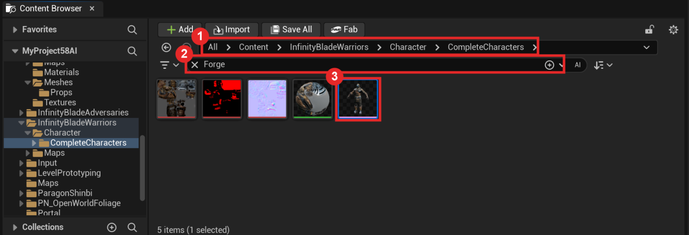
1-2右鍵 › Skeleton › Assign Skeleton
- 對 Forge 按右鍵。1
- 滑鼠移到 Skeleton，右邊會展開子選單。2
- 點 Assign Skeleton。3
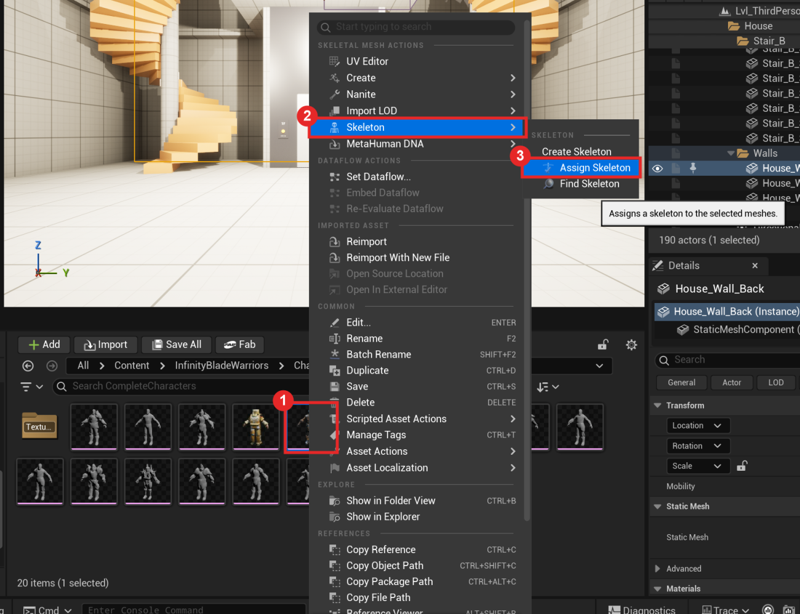
1-3選 AnimStarterPack 的骨架
會跳出 Choose Skeleton 視窗。
- 在搜尋框輸入
newUE4。1 - 點選唯一的結果
newUE4_Mannequin_Skeleton。2 - 下方會出現骨頭對照表：左邊是 Forge 目前的骨頭，右邊是新骨架的骨頭。名字一一對上（root→root、pelvis→pelvis…），代表可以換。3
- 按 Accept。4
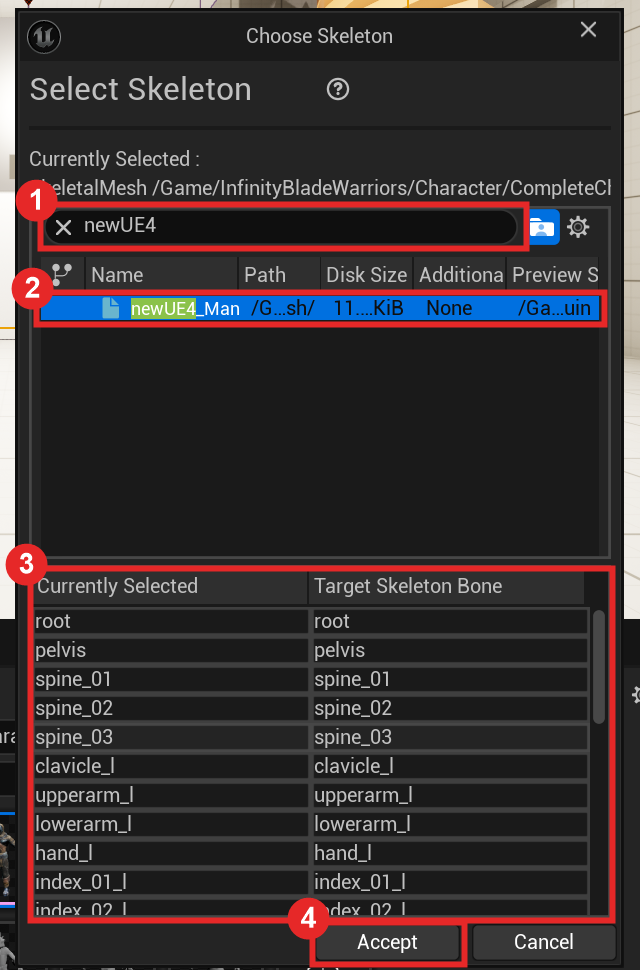
1-4存檔，並確認換成功
- 按下 Accept 後，Forge 縮圖左下角會出現
*，代表還沒存檔。選取 Forge 按 Ctrl+S 存檔。1 - 確認：滑鼠停在 Forge 縮圖上，提示框的 Skeleton 那一行要顯示
…/AnimStarterPack/UE4_Mannequin/Mesh/newUE4_Mannequin_Skeleton。2
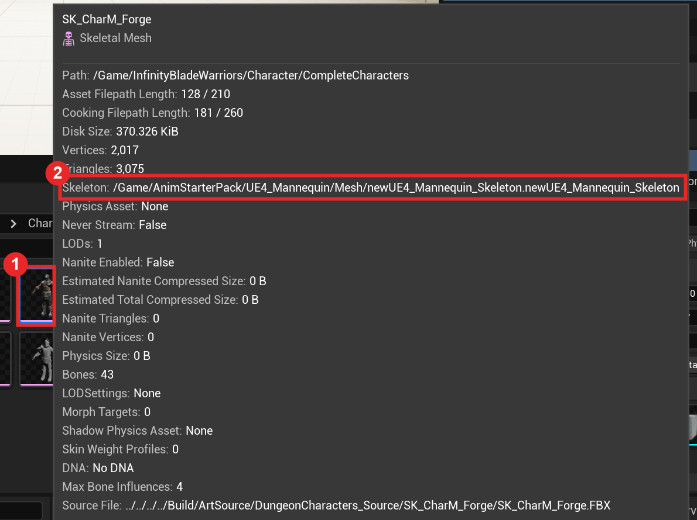
2換 Mesh：改主角藍圖
打開主角藍圖 Content › ThirdPerson › Blueprints › BP_ThirdPersonCharacter，只改 Mesh 元件的兩個欄位。
2-1點選 Mesh 元件
- 在左上 Components 面板點 Mesh (CharacterMesh0)。1
- 右邊 Details 會出現要改的兩格：Skeletal Mesh Asset2和 Anim Class3。目前是 5.8 範本的 Quinn 和
ABP_Unarmed。
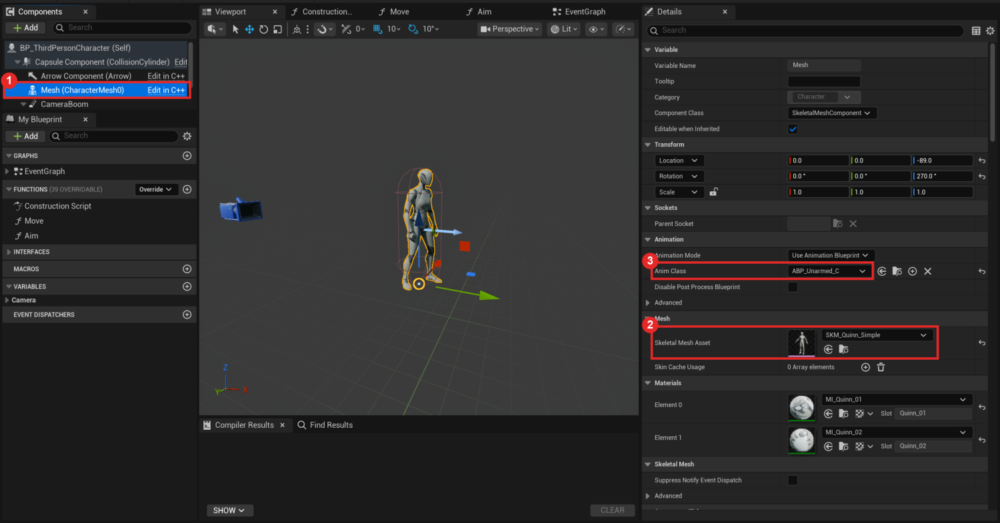
2-2Skeletal Mesh Asset → SK_CharM_Forge
- 點 Skeletal Mesh Asset 的下拉選單，在搜尋框輸入
SK_CharM_Forge。1 - 點選搜尋結果。2材質會自動換成 Forge 的材質。
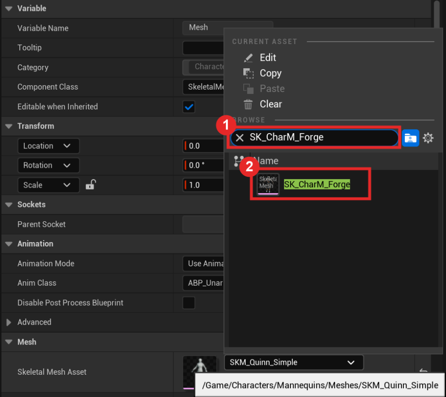
2-3Anim Class → UE4ASP_HeroTPP_AnimBlueprint
- 點 Anim Class 的下拉選單，搜尋
UE4ASP。1 - 點選
UE4ASP_HeroTPP_AnimBlueprint（AnimStarterPack 附的動畫藍圖）。2
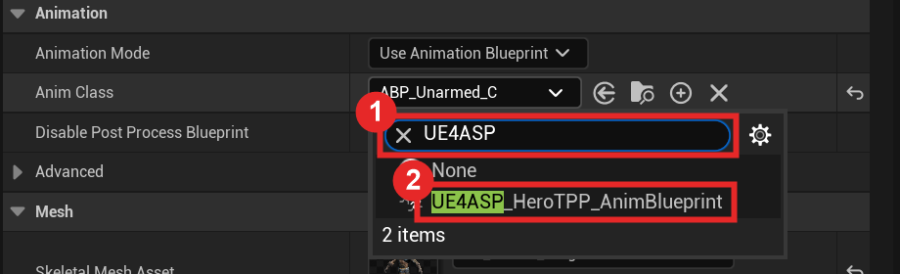
選好之後，左邊預覽視窗裡的 Forge 會立刻擺出持槍待機的姿勢1，Details 兩格都換好了23。
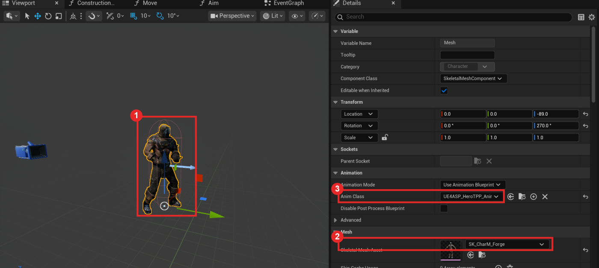
2-4Compile、Save
- 按左上角 Compile。1
- 下方 Compiler Results 出現 successful。2
- 按 Ctrl+S 存檔，然後關掉藍圖視窗。
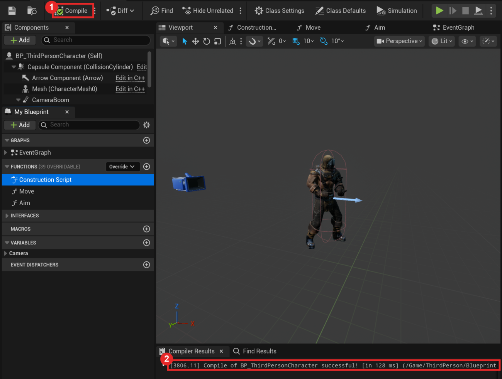
3測試
回到主編輯器按 ▶ Play，用 WASD 走動、空白鍵跳。
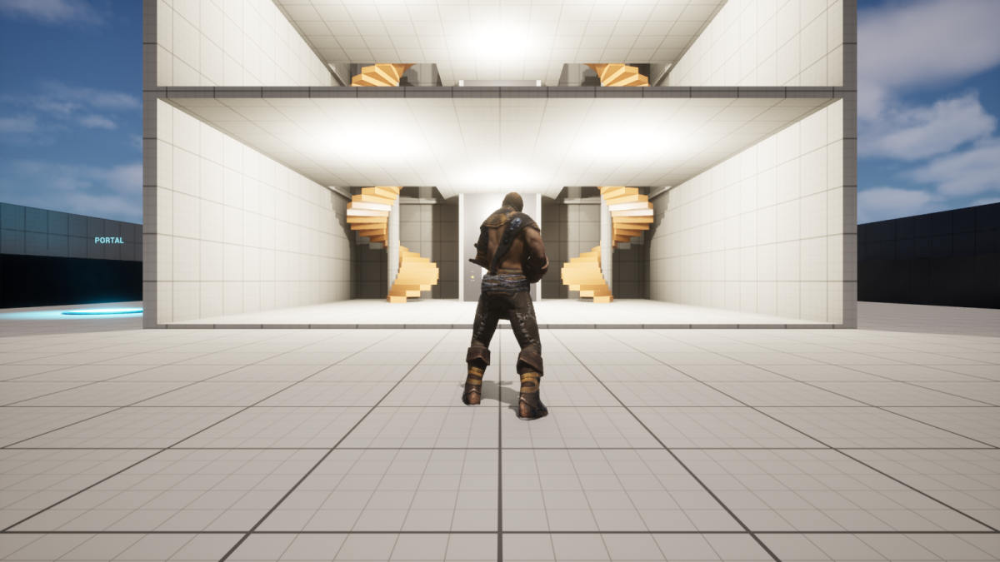
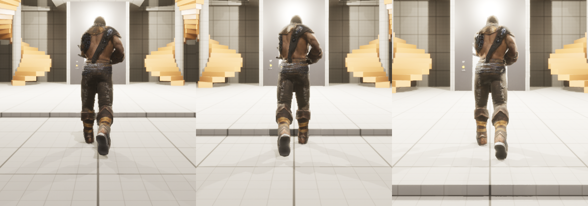
!提醒：腳黏在地上，沒有抬起來
照這份手冊做（AnimStarterPack 的動畫藍圖）不會遇到這個問題。只有當你想保留 5.8 範本原本的空手動作，改用 Retarget Animations 把 ABP_Unarmed 轉到舊骨架時才會遇到：角色走路、跑步時腳黏在地板上滑動，不會抬腳。
原因：5.8 範本的動畫藍圖最後面有一個 Control Rig 節點（腳步 IK），它是照 UE5 骨架寫的。換成舊骨架後，它會把腳壓在地上。
處理方法：打開轉好的動畫藍圖 → 左側 AnimGraph：
- 刪掉 Control Rig 節點。1
- 一起刪掉只接給它用的 NOT 和 Is Falling。2
- 把 Slot 'DefaultSlot' 的輸出直接拉到 Output Pose。
- Compile → Save。
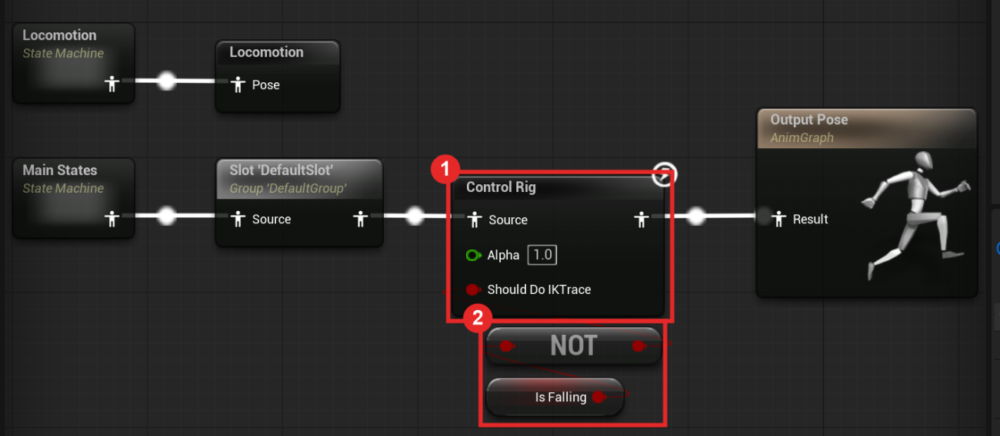
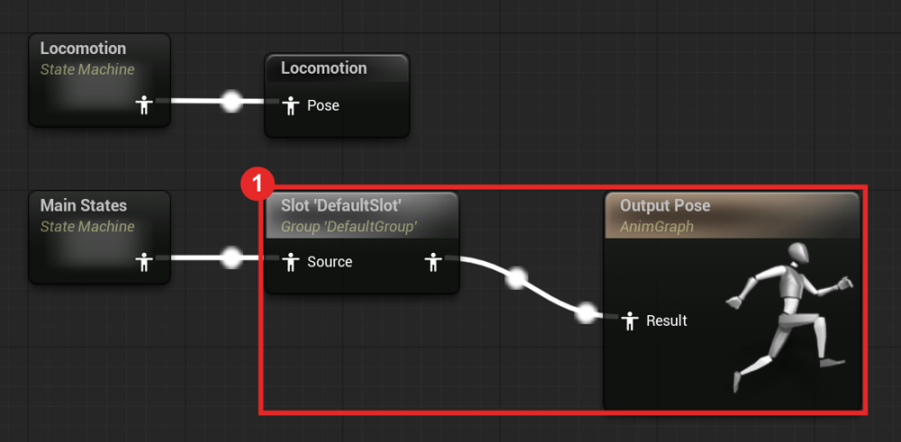
?常見問題
| 狀況 | 原因與處理 |
|---|---|
| 右鍵選單找不到 Skeletal Mesh | 5.8 改名為 Skeleton，在選單上半部（見 1-2 的圖）。 |
| Choose Skeleton 清單裡一堆骨架，不知道選哪個 | 搜尋 newUE4，只會剩一個。 |
| 骨頭對照表左右的名字對不上 | 這招只適用 UE4 人形角色（骨頭名稱是 root、pelvis、spine_01…）。怪物、蜘蛛、狼這類骨架不同的角色不能用，按 Cancel。 |
| 重開專案後角色又變回原本的骨架 | Assign Skeleton 之後沒存檔。看縮圖上有沒有 *，有的話按 Ctrl+S。 |
| Anim Class 搜尋不到 UE4ASP | 確認 AnimStarterPack 有加入專案（Content 裡有 AnimStarterPack 資料夾）。 |
| 角色浮在半空或陷進地板 | 確認 Mesh 的 Location Z 是 -89、Rotation Yaw 是 270（範本預設值，不要動）。 |
| 想換成別的角色 | 同樣兩步：對那個角色做 1-2～1-4，再把 Skeletal Mesh Asset 換成它。Infinity Blade Warriors 的其他角色多半已經是 newUE4_Mannequin_Skeleton，可以直接做第 2 步（滑鼠停在縮圖上看 Skeleton 那一行就知道）。 |
✓驗收清單
- 滑鼠停在
SK_CharM_Forge上，Skeleton 顯示newUE4_Mannequin_Skeleton，縮圖上沒有*。 BP_ThirdPersonCharacter的 Mesh：Skeletal Mesh Asset =SK_CharM_Forge、Anim Class =UE4ASP_HeroTPP_AnimBlueprint。- 藍圖 Compile 成功並已存檔。
- 按 ▶ 後，主角是 Forge，待機是持槍姿勢，走跑時雙腳會抬起，按空白鍵會跳。